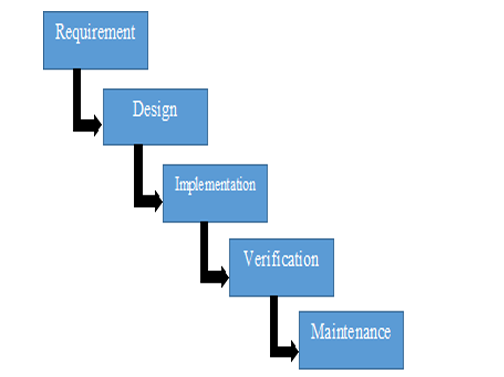

Waterfall Model
The waterfall model can also be referred to as the Royce Model, is a linear progression model from start to finish, because of the linear design of the waterfall model it is often referred to by developers as the linear-sequential lifecycle model. This model contains five stages, these are:
- Requirements
- Design
- Implementation
- Verification
- Maintenance
The waterfall model is a simple and easy model to understand with clear start and end points for developers to follow. With this model, the developers must fully complete each stage before advancing onto the next stage within the model. This model is typically used in small projects without specific requirements. At the end of each stage in the model a review is undertaken which determines whether the project is correct and working, along with if the development should continue or the project should discard the project. With this model software, testing starts after the development of the software is completed.
Each Stage Explained
Requirements
The requirements section of the waterfall method is designed to ensure that the developer fully understands the requirements and needs of the client. This can be achieved via meetings between the developer and client, in which the client provides the developer with the specific items they require for the project and how they expect the project to function. These requirements are usually presented to the developer in a word document format, which specifically highlights each individual requirement.
Design
Upon receiving the requirements from the client, the developer will produce a plan of what the project will look like and each feature which matches the requirements. The design process typically consists of wireframes, which highlight a basic template for the project, this features colours, layout, text font and size, to provide the client with an overview of how the project should look. This will allow the client to change various aspects of the design to fit the design which they imagined.
Implementation
Once the design has been finalized and approved by the client, the developer will begin creating the project, ensuring they test each aspect of the code. Once the development process has been completed, the project will then be installed on a new system to start testing the project to ensure that it functions appropriately and to the client’s needs and requirements.
Verification
The verification stage is used after the implementation stage is completed, and this stage is used by developers to check for errors within the project. This stage allows the developer to identify the errors and fix them before the project is finalised and provided to the client.
Maintenance
The final stage of the waterfall model revolves around the maintenance of the project after the client has approved it. This stage involves the developer checking for further errors within the programming and optimizing the capabilities of the project to ensure that it will function appropriately when released to the public.
When is the waterfall typically used?
The waterfall model is typically used in the development of projects within small businesses. Along with this, the model is used to develop small projects as there are fewer components and requirements within smaller projects. This will result in the project being filled with fewer errors as this model doesn’t allow for developers to return to a specific part of the model, without starting the project again.
| Advantages | Disadvantages |
|---|---|
| Simple and easy to use, making this model ideal to use when developing small projects | Not guaranteed that one phase of the model is 100% correct; meaning that a ‘snowball’ effect can occur causing the project to fail due to errors which could have occurred early in development. |
| Testing/validation are conducted after most stages of the model, this is used to reduce the number of errors and increase the accuracy of the final product. | Not suited for large projects where specifications can change throughout the development, as the model can only be changed after the development is completed. |
| After each stage the project is delivered to the client, it is then reviewed by the client before any further continuation of the project. | The final delivery of the product is near the end of the life cycle, preventing any changes from being made without the model being started again. |
Comparison with another model
The spiral model consists of four stages, these include:
- Requirements
- Design
- Implementation
- Testing
These stages are able to be repeated multiple times throughout the development of the project. This is due to the design of the model, the developer/developers create a specific part of the project, then they perform tests to highlight errors which need to be resolved. The developers do not continue with development until the errors are fixed and they are happy with the part of the project. This model is typically used while developing large projects as there are more errors which can occur within large projects. Developers favour this model over the waterfall model, due to being able to select and test specific parts and elements of the project without needing to start the project again. Along with this, the spiral model allows for the project to be continuously edited and maintained, whereas the waterfall model would require a new project to be created.